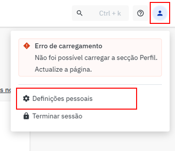
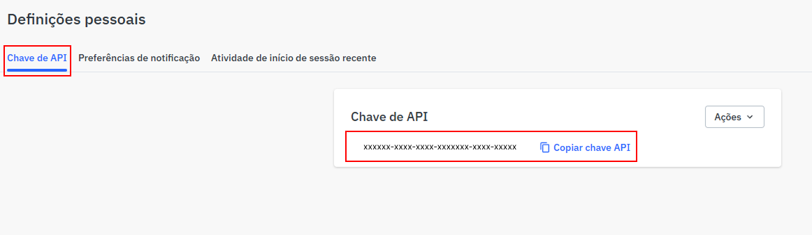

Onboarding · Passo 1 de 4 · Ajuda
Como gerar a tua chave Worten
2 minutos. 3 passos. Tudo dentro do teu Worten Seller Center.
Abre o Worten Seller Center
Vai a marketplace.worten.pt num separador novo e inicia sessão com as credenciais que usas habitualmente para gerir a tua loja.
Abre as Definições pessoais
No canto superior direito do Seller Center, clica no avatar. No menu que aparece, clica em Definições pessoais.

Abre o separador Chave de API e copia
Dentro de Definições pessoais, o primeiro separador é Chave de API. Se já tens uma chave gerada, clica em Copiar chave API e cola-a no MarketPilot.
Se ainda não tens chave, abre o menu Ações (canto superior direito do cartão) e escolhe Gerar nova chave de API. A chave aparece logo abaixo, pronta para copiar.

A tua chave dá acesso total à conta Worten — incluindo dados bancários, encomendas e preços. No MarketPilot, fica encriptada em repouso. Apenas o motor de repricing a usa para falar com o Worten — nem o nosso fundador a vê em texto puro.